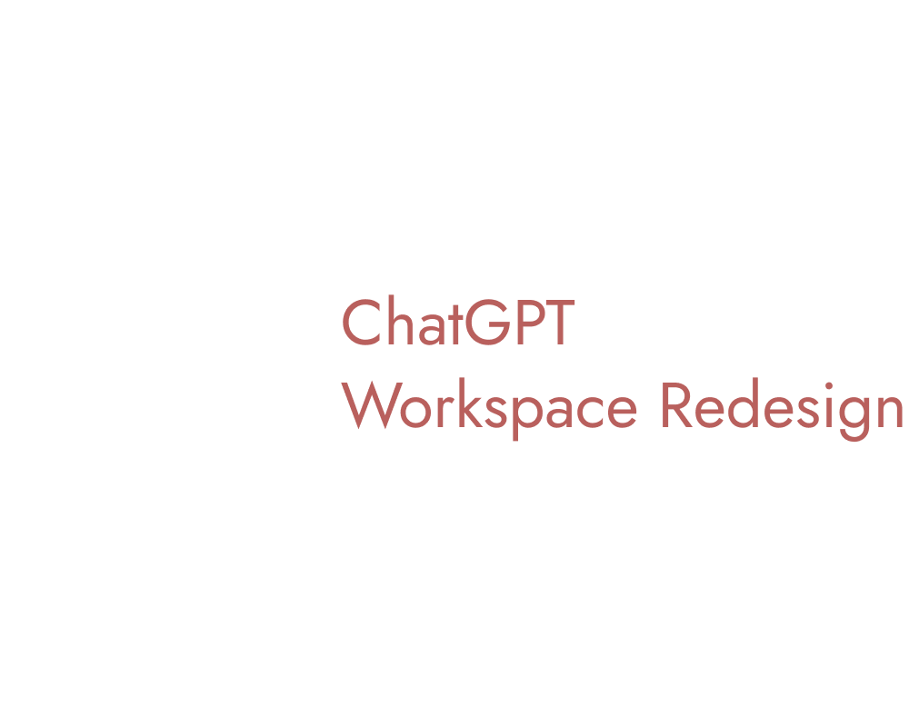
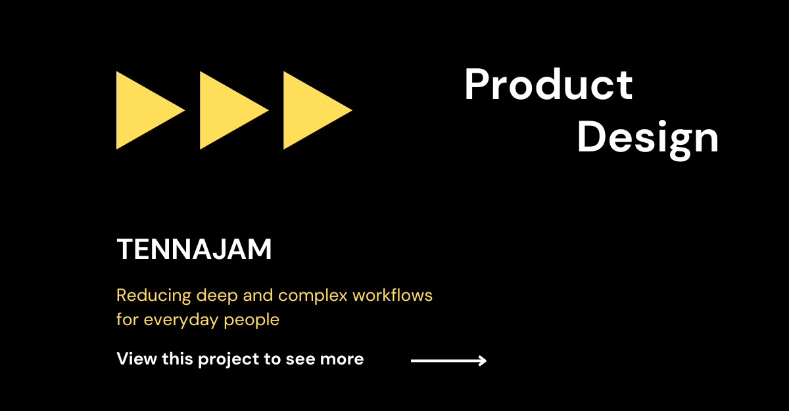
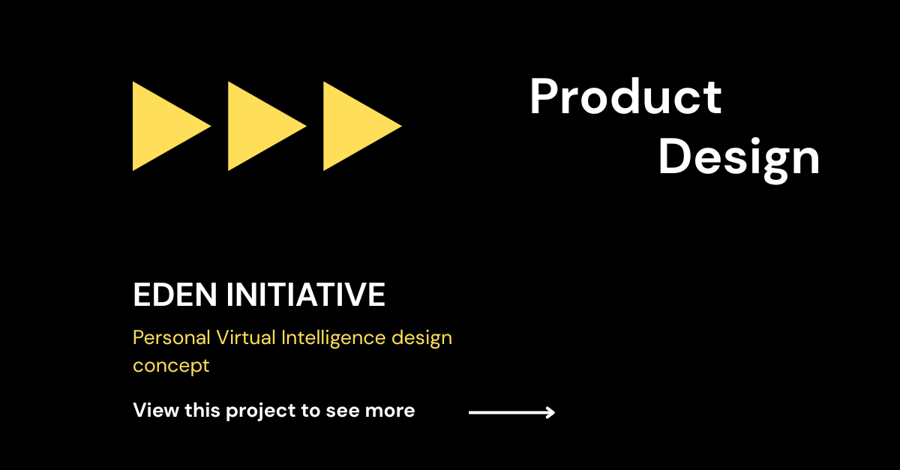
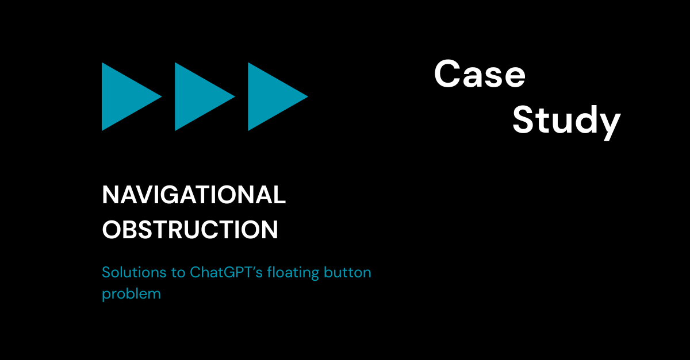

Designing clear, usable product systems for real-world workflows.
My Work & Thought Process...
Each project highlights specific problems ranging surface level issues to highly complex workflows that promote clarity, usability, or simplified processes for both users and businesses.

ChatGPT — Structural Interface Redesign
Product DesignSeparated navigation from conversation to improve focus and reduce cognitive load.
- Clear separation of navigation and conversation
- Reduced distraction of navigation and conversation
- Consistent, predictable layout structure
- Scalable foundation for future features

TennaJam — Condensing Complex Systems into a Usable Experience
Product DesignTurned a dense, technical server workflow into a guided product experience accessible to non-technical users.
- Simplified complex setup steps into a guided flow
- Avoided overwhelming users by breaking the process into clear steps
- Separated basic setup from advanced options
- Designed clear system state and feedback loops

Eden Initiative — Structuring AI Interaction Through Layered Design
Product DesignBuilt a layered AI interaction model to improve clarity, control, and scalability.
- Separated hardware, system, and personality layers
- Clarified system logic vs conversational output
- Structured prompt and interaction flows
- Built scalable architecture for complex AI behavior

Case Study in Navigation Obstruction (Tablet UI)
Product DesignResolved a UI interaction issue where a primary action conflicted with core navigation, reducing usability.
- Evaluated navigation vs. action conflicts
- Identified hierarchy and spatial breakdowns
- Developed layout solutions to restore clarity
- Improved usability through structural changes
Feel free to explore my Figma portfolio too - for those with curious minds that is. Although constantly improved, it provides a working insight of my "brain to design" with skills that evolve and become more polished throughout my career.
Download full portfolio{kind=link}
Me, The Product Designer
I'm a product designer that thinks beyond visuals and focus on how systems actually work for users. By prioritizing alignment across UI, UX, and foundational system logic disciplines I provide experiences that feel intuitive and scalable.This also includes identifying friction, restructuring workflows, and designing solutions that improve clarity, control, and overall usability.
How I Work
- Clarify the problem, goals, and constraints
- Map user flows before designing visuals
- Explore solutions through wireframes
- Refine layouts with the full journey in mind
- Document decisions and trade-offs
Tools & Skills
- Product & UX Design — User flows, wireframes, usability
- UI Design — Layout systems, spacing
- Front-End — HTML (Strong), CSS (Developing), JS (Foundation)
- Figma